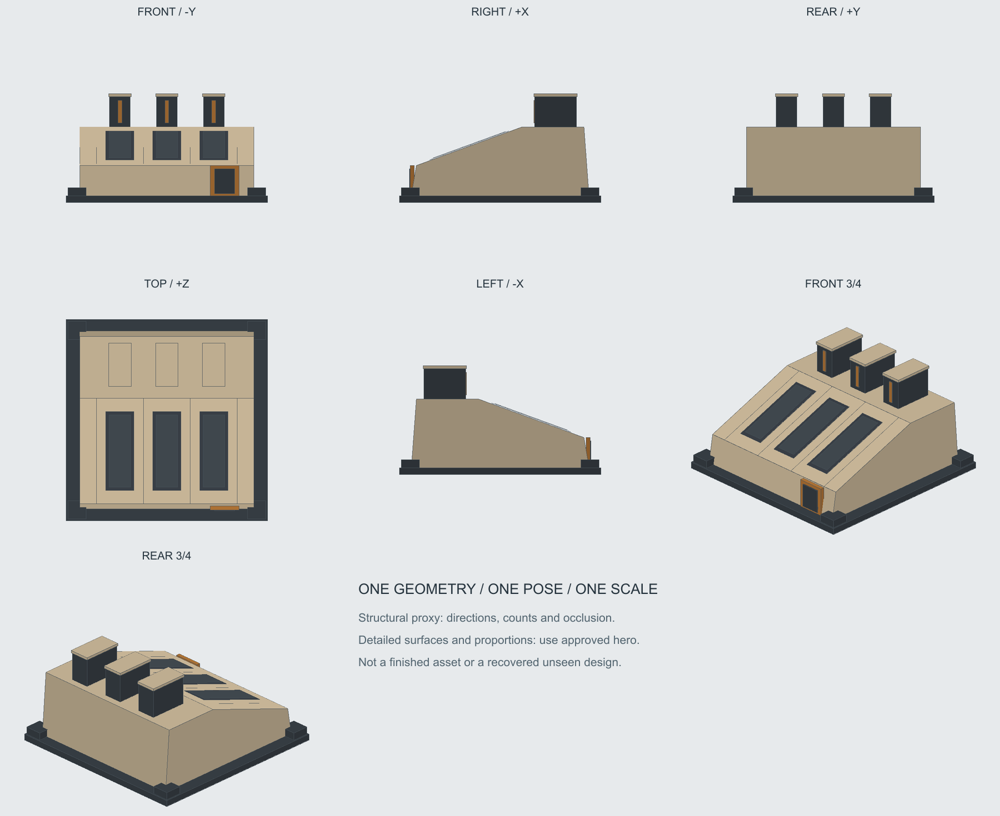

Оперативный центр G · согласованность ракурсов
Старый художественный лист отклонён как набор геометрических входов. Ниже — основной вид и структурные виды одного каркаса. Это помогает понять устройство; каркас ещё не является точной детальной реконструкцией концепта.
Основной нейтральный вид

Найденные расхождения
- Три ребра и три полосы сохраняются; смены основной конструкции не обнаружено.
- TOP показывает переднюю дверь/фасад так, как не должен строгий вид сверху.
- Размер/длина задних рёбер и полос относительно ската немного плавают.
Что сохранять
- Три неподвижных задних ребра и три полосы на одном наклонном скате.
- Закрытая дверь спереди справа.
- Один клиновидный корпус; передняя часть ниже задней.
Одна геометрия · одна поза · один масштаб

Невидимая правая стенка/задние мелкие детали не восстановлены фотографически; уточнять на единой детальной сетке. Этот набор исправляет направления и логические связи, а не доказывает точные размеры по художественному изображению.
Виды по отдельности
Отклонённый старый генеративный лист — только история

Необходима дальнейшая детализация одного объёма по основному 3/4. Не добавлять противоречащие старые листы в модельный запрос, не усреднять их и не копировать невидимые на концепте детали как утверждённые.